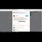

<!DOCTYPE html>
<html lang="en">
 <head>
<!-- Favicon -->
<link rel="shortcut icon" href="../../favicon.ico">
  <meta charset="utf-8"/>
  <title>
   David Seaman Responds To Why He Kept Tweeting ABout Pizzagate All Day.
  </title>
  <meta content="Post on /v/Pizzagate archived on 2017-01-31 by BadGuacamoleTV." name="description"/>
  <meta content="David Seaman Responds To Why He Kept Tweeting ABout Pizzagate All Day." property="og:title"/>
  <meta content="Post on /v/Pizzagate archived on 2017-01-31 by BadGuacamoleTV." property="og:description"/>
  <link href="../../static/css/page.css" rel="stylesheet"/>
  <meta content="https://voat.pizzagate.hackliberty.org/thumbnails/fd/ef/fdef23f9-768f-476b-8a7d-fee74bd2aa6d.jpg" property="og:image"/>
  <meta content="https://voat.pizzagate.hackliberty.org/v/pizzagate/1605237.html" property="og:url"/>
  <meta content="width=device-width, initial-scale=1" name="viewport"/>
  <link href="https://voat.pizzagate.hackliberty.org/1605237.html" rel="canonical"/>
  <meta content="article" property="og:type"/>
  <meta content="Voat /v/Pizzagate Archive" property="og:site_name"/>
  <meta content="en_US" property="og:locale"/>
  <meta content="summary_large_image" name="twitter:card"/>
  <meta content="David Seaman Responds To Why He Kept Tweeting ABout Pizzagate All Day." name="twitter:title"/>
  <meta content="Post on /v/Pizzagate archived on 2017-01-31 by BadGuacamoleTV." name="twitter:description"/>
  <meta content="https://voat.pizzagate.hackliberty.org/thumbnails/fd/ef/fdef23f9-768f-476b-8a7d-fee74bd2aa6d.jpg" name="twitter:image"/>
 </head>
</html>
<body class="dark">
 <div id="container">
  <!-- array (
  'submissionid' => 1605237,
  'creationDate' => '2017-01-31 03:00:41',
  'domain' => 'youtube.com',
  'formattedContent' => NULL,
  'isAdult' => 0,
  'isAnonymized' => 0,
  'subverse' => 'pizzagate',
  'thumbnail' => 'fdef23f9-768f-476b-8a7d-fee74bd2aa6d.jpg',
  'title' => 'David Seaman Responds To Why He Kept Tweeting ABout Pizzagate All Day.',
  'url' => 'https://youtu.be/bMOZoY2f0fs',
  'userName' => 'BadGuacamoleTV',
  'archivedLink' => NULL,
  'archivedDomain' => NULL,
  'isDeleted' => 0,
) -->
  <div style="text-align:center; font-size:24px; font-weight:bold;">
   <a href="../../index.html" style="text-decoration: none; color: inherit;">
    Voat /v/Pizzagate Archive
   </a>
  </div>
  <div class="content" role="main">
   <div class="sitetable linklisting" id="siteTable">
    <div class="submission id-1605237 link type-text" id="submission-1605237">
     <a name="submissionTop">
     </a>
     <p class="parent">
     </p>
     <a class="thumbnail may-blank" href="https://youtu.be/bMOZoY2f0fs" target="_self">
      
     </a>
     <div class="entry unvoted">
      <p class="title">
       <a class="title may-blank" href="https://youtu.be/bMOZoY2f0fs" tabindex="1" target="_self" title="David Seaman Responds To Why He Kept Tweeting ABout Pizzagate All Day.">
        David Seaman Responds To Why He Kept Tweeting ABout Pizzagate All Day.
       </a>
       <span class="domain">
        (
        <a href="https://archive.searchvoat.co/search.php?d=youtube.com">
         youtube.com
        </a>
        )
       </span>
      </p>
      <p class="tagline">
       submitted
       <time datetime="2017-01-31T03:00:41+00:00" title="01/31/2017 3:00:41 AM">
        2017-01-31T03:00:41
       </time>
       by
       <span class="userattrs">
        <a class="author may-blank" href="https://archive.searchvoat.co/search.php?u=BadGuacamoleTV">
         BadGuacamoleTV
        </a>
       </span>
      </p>
      <ul class="flat-list buttons">
       <li class="first">
        <a class="comments may-blank" href="https://archive.searchvoat.co/v/pizzagate/1605237" rel="nofollow">
         3 comments
        </a>
       </li>
      </ul>
     </div>
     <div class="child">
     </div>
     <div class="clearleft">
     </div>
    </div>
    <div class="clearleft">
    </div>
   </div>
   <div class="horizontal-line">
   </div>
   <div class="commentarea">
    <div class="sitetable nestedlisting" id="siteTable">
     <div class="child id-7831043 comment even" style="">
      <div class="entry unvoted">
       <div class="noncollapsed" id="7831043" style=";">
        <p class="tagline">
         <a class="author may-blank" href="https://archive.searchvoat.co/search.php?u=shoosh">
          shoosh
         </a>
         <span class="userattrs">
         </span>
         <time datetime="2017-01-31T05:52:46+00:00" title="1/31/2017 5:52:46 AM">
          2017-01-31T05:52:46
         </time>
        </p>
        <div class="usertext-body may-blank-within" id="commentContent-7831043">
         <div class="md">
          <p>
           <p>
            David Seaman has said he wanted to back off from pgate and focus on other things since November I think.  He's a journalist who wants to do a wide variety of information,  but the nature of the pgate crap has caused him to go back to it, and he does have a sincere caring about the problem.
            <br/>
            I'm not sure why you think there must be some other reason.
           </p>
           <p>
            Ben Swan backing off of pg doesn't seem like reason for concern either.   He wasn't really involved too much, back came out with a goo review, now he's on to a media company isn't he?  He'll have to investigate other things.
           </p>
           <p>
            I noticed  random posters also claim that  Alex Jones has backed off,  and although I don't really watch his stuff (not a fan)  I've caught a few of his vids the last few days and although Jones isn't using the word pizzagate, he's def talking about  pedophilia, as are other reporters on his show.
           </p>
           <p>
            Are you doing okay  Guac?     I know this is more personal for you, as it is for me.
           </p>
           <p>
            A professional who continues to mention pgate is  Opperman Report.  I don't think he's a journalist, but he has  forensic computer experience  (if I remember correctly.)     I'm wondering if Opperman has done the forensics on that Koons Instagram  pic of what's allegedly  his naked wife.  From the beginning I wanted a computer forensic to compare if that was his wife or a kid, because I wasn't the only one who thought it was a kid.  It was on show at the Whitney museum.
           </p>
           <p>
            on a different topic:  has anyone dug on Koons.  (not sure if I'm spelling that properly and I'm too lazy to look it up.)
           </p>
          </p>
         </div>
        </div>
        <ul class="flat-list buttons">
         <li class="first">
          <a class="bylink" href="https://archive.searchvoat.co/v/pizzagate/1605237/7831043" rel="nofollow">
           link
          </a>
         </li>
        </ul>
       </div>
      </div>
      <div class="child id-7832114 comment odd" style="">
       <div class="entry unvoted">
        <div class="noncollapsed" id="7832114" style=";">
         <p class="tagline">
          <a class="author may-blank" href="https://archive.searchvoat.co/search.php?u=BadGuacamoleTV">
           BadGuacamoleTV
          </a>
          <span class="userattrs">
          </span>
          <time datetime="2017-01-31T09:11:39+00:00" title="1/31/2017 9:11:39 AM">
           2017-01-31T09:11:39
          </time>
         </p>
         <div class="usertext-body may-blank-within" id="commentContent-7832114">
          <div class="md">
           <p>
            <p>
             Its not so much I think as I ponder. His financial livelyhood has very much depended upon pizzagate these last few months. I just am suspicious that there isnt a secret court  command we are unaware of. I owe my last few weeks of groceries to david seaman (cant explain but its true). I support the dude. Hope he comes out on the cool side of things in the end.
            </p>
           </p>
          </div>
         </div>
         <ul class="flat-list buttons">
          <li class="first">
           <a class="bylink" href="https://archive.searchvoat.co/v/pizzagate/1605237/7832114" rel="nofollow">
            link
           </a>
          </li>
         </ul>
        </div>
       </div>
       <div class="child id-7843785 comment even" style="">
        <div class="entry unvoted">
         <div class="noncollapsed" id="7843785" style=";">
          <p class="tagline">
           <a class="author may-blank" href="https://archive.searchvoat.co/search.php?u=strix-varia">
            strix-varia
           </a>
           <span class="userattrs">
           </span>
           <time datetime="2017-02-01T05:40:14+00:00" title="2/1/2017 5:40:14 AM">
            2017-02-01T05:40:14
           </time>
          </p>
          <div class="usertext-body may-blank-within" id="commentContent-7843785">
           <div class="md">
            <p>
             <p>
              Me too.  His firing at that horrible fluffington post, got me red-pilled big time.
             </p>
            </p>
           </div>
          </div>
          <ul class="flat-list buttons">
           <li class="first">
            <a class="bylink" href="https://archive.searchvoat.co/v/pizzagate/1605237/7843785" rel="nofollow">
             link
            </a>
           </li>
          </ul>
         </div>
        </div>
       </div>
      </div>
     </div>
    </div>
   </div>
  </div>
 </div>
<!-- Footer Section -->
<footer class="container-fluid mt-3">
  <p class="small mb-0">
    /v/pizzagate archive has 40446 posts and 683312 total comments.
    <a href="https://git.hackliberty.org/c0mmando/voat-pizzagate-archive/">source code</a>.
  </p>
</footer>

<script src="../../static/js/jquery-3.7.1.slim.min.js"></script>
<script src="../../static/js/comments-toggle.js"></script>

</body>
